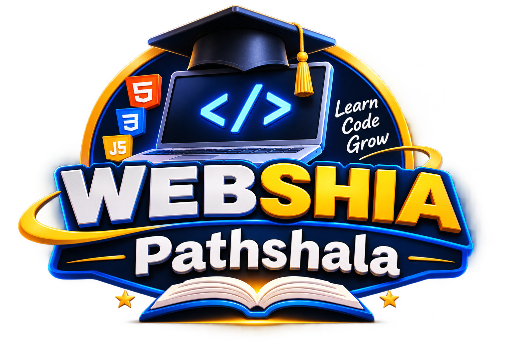

WEBSHIA Pathshala

Welcome to WEBSHIA Pathshala! Here you will find simple, accurate, and easy-to-understand NCERT solutions, chapter summaries, and exam-ready question-answers for Class 9 students.
Class 9 English Kaveri
Chapter 1 : How I Taught My Grandmother To Read - Question & Answers Chapter 1 (Poem) : Bharat Our Land - Question & Answers Chapter 2 : The Poet Maker - Question & Answer Chapter 2 (Poem) : Gifts Of Grace : Honouring Our Vocations - Question & Answer
About Us |
Contact Us |
Privacy Policy
Disclaimer: All study materials, summaries, and question-answers provided on WEBSHIA Pathshala are created solely for educational and reference purposes. We are not affiliated with, endorsed by, or connected to NCERT or any government body. Textbook names and chapters belong to their respective copyright owners.
© 2026 WEBSHIA Pathshala. All Rights Reserved.